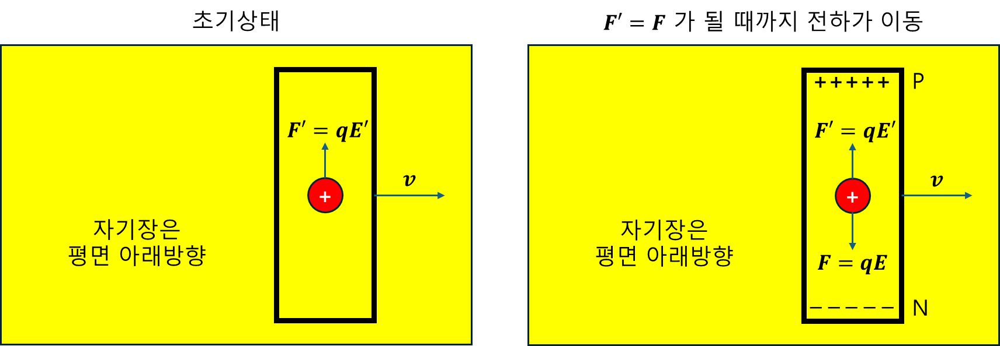

(r) EMF & Voltage
0. EMF & Voltage: 기전력과 전압, 왜 부호가 다른 이유
많은 학생이 기전력(Electromotive Force, EMF) 과 전압(Voltage) 의 부호가 왜 반대로 설정되는지 궁금해한다. 이 챕터는 이 질문에 대한 명확한 답을 제시하고, 두 개념의 핵심적인 차이를 명확히 이해하도록 돕는다.
- EMF는 전압이 아니다.
- EMF는 전압을 만들어내기 위해 단위 전하에 해 준 ‘일’ 을 뜻한다. 쉽게 말해, EMF는 전위차(전압)의 ‘원인’ 이다.
1. 운동 기전력만 있는 경우 (변압 기전력 = 0)
움직이는 도체 때문에 발생하는 기전력을 운동 기전력(Motional EMF) 이라 한다. 이 현상을 분석하려면, 이전 챕터에서 다룬 물질 미분 개념이 필요하다.
패러데이 유도 법칙의 일반식은 다음과 같다.
$$ \oint_{C}d\vec{l}\cdot\vec{E}'=-\frac{\partial}{\partial t}\Phi_{B}+\oint_{C}d\vec{l}\cdot\vec{v}\times\vec{B} $$여기서 $\vec{E}’$ 는 움직이는 관찰자의 시점에서 전하가 느끼는 ‘실질적인’ 전기장 이다.
만약 주변 자기장 $\vec{B}$ 자체가 시간에 따라 변하지 않는다면, 즉 유도 기전력 원인이 없다면, 식은 다음과 같이 간단해진다.
$$ V_{emf} = \oint_{C}d\vec{l}\cdot\vec{E}' = \oint_{C}d\vec{l}\cdot\vec{v}\times\vec{B} $$이 $\vec{v} \times \vec{B}$는 자기장 속에서 움직이는 전하에게 작용하는 자기력을 단위 전하당 힘으로 나타낸 것이다. 이 힘이 전하들을 도체 안에서 움직이게 해서 기전력을 만들어낸다.
그림처럼 자기장($\vec{B}$) 안에서 속도 $\vec{v}$로 움직이는 도체 막대(예: 길이 $L$)를 생각해 보자. 막대 안의 자유 전자들은 움직이면서 $\vec{v} \times \vec{B}$라는 자기력을 받는다. 이 힘은 전자들을 막대 한쪽 끝으로 밀어내어 전하가 분리되고, 그 결과 막대 양끝에 정전기장($\vec{E}_{\text{electrostatic}}$) 이 생긴다. 운동 기전력의 경우, $\vec{v} \times \vec{B}$라는 비보존적인 자기력이 계속해서 전하를 밀어내고 있다. 전하들은 이 자기력과 막대 내부에 형성된 정전기장에 의한 힘($q\vec{E}_{\text{electrostatic}}$)이 균형을 이룰 때까지 움직인다.
전하들이 한쪽 끝으로 몰리면서 평형 상태에 이르면, 전하에 작용하는 총 힘(net force) 은 0이 된다. 즉, 움직이는 관측자의 시점에서는 유효 전기장 $\vec{E}’=0$이 된다. 이것은 이상적인 금속 내에 전기장이 형성되지 않는다는 결과와 일치하며, 관측자에 의한 진술임을 기억하자. 이 총 힘의 평형을 통해, 도체 내부에는 $\vec{E}_{\text{electrostatic}}=-\vec{v}\times\vec{B}$ 관계가 성립하는 정전기장이 존재하게 된다.
이제 막대 양단 N과 P 사이의 전압($V_{PN}$) 을 구해보자.
$$V_{PN} = -\int_{N}^{P}d\vec{l}\cdot\vec{E}_{electrostatic}$$여기에 $\vec{E}_{\text{electrostatic}} = -\vec{v} \times \vec{B}$를 대입하면:
$$ V_{PN} = -\int_{N}^{P}d\vec{l}\cdot(-\vec{v}\times\vec{B}) = \int_{N}^{P}d\vec{l}\cdot(\vec{v}\times\vec{B}) $$이 $V_{PN}$는 운동 기전력 때문에 막대 양단에 생기는 전압 이다. 운동 기전력에서는 $\int (\vec{v} \times \vec{B}) \cdot d\vec{l}$ 자체가 전하에게 해 준 ‘일’이다.
2. 변압 기전력만 있는 경우 (운동 기전력 = 0)
이번에는 코일(도체 루프)은 움직이지 않고 가만히 있는데, 주위의 자기장이 시간에 따라 변해서 기전력이 생기는 상황을 변압 기전력(Transformer EMF) 이라 한다. 코일이 움직이지 않으니 $\vec{v}=0$이라서 운동 기전력 항은 사라진다.
패러데이 유도 법칙은 다음과 같이 간단해진다.
$$ V_{emf} = \oint_{C}d\vec{l}\cdot\vec{E}=-\frac{\partial}{\partial t}\Phi_{B} $$여기서 $\vec{E}’$는 시간에 따라 변하는 자기장 때문에 생기는 ‘비보존적인’ 전기장 이다. 인덕터(코일)의 경우, 유도 기전력은 코일을 통과하는 자기 선속($\Phi_B$)의 변화율에 비례하며, 전류 변화율과 인덕턴스 $L$로 표현할 수 있다.
$$ N\Phi_{B} = Li $$$$ V_{emf} = -\frac{\partial}{\partial t}\Phi_{B} = -L\frac{di}{dt}, \quad N=1 $$
코일을 포함하고 코일 바깥쪽을 통과하는 적분 경로를 설정하자. 이상적인 도체(전기가 아주 잘 통하는)로 만든 코일 안에는 전기장이 0이다. 아래식의 최종 형태는, 코일 외부 전기장이 전하에게 해준 일 이다.
$$ V_{emf} =\oint_{C}d\vec{l}\cdot\vec{E} =\int_2^1 d\vec{l}\cdot\vec{E}_{coil}+\int_1^2 d\vec{l}\cdot\vec{E}_{ext} =\int_1^2 d\vec{l}\cdot\vec{E}_{ext} $$이제 EMF와 코일 양단에 걸리는 전압($V$)의 부호 차이를 살펴보자. 회로 이론에서 코일 양단에 걸리는 전압($V$) 은 수동부호규약에 의해, 다음과 같이 정의한다.
$$V = L\frac{di}{dt}$$이 $V$는 전류가 흐르는 방향으로 측정되는 전압 ‘강하’(voltage drop), 즉 전기 에너지가 소모되면서 전위가 높은 곳에서 낮은 곳으로 떨어지는 양을 의미합니다. 마치 물이 높은 곳에서 낮은 곳으로 흐르면서 에너지를 잃는 것과 비슷하다.
하지만 유도 기전력(emf) 은 렌츠의 법칙에 따라 ‘자기 선속의 변화를 방해하는 방향’ 으로 유도된다. 예를 들어, 코일에 흐르는 전류가 증가하면 코일은 그 증가를 ‘막기 위해’ 반대 방향으로 EMF를 만들어낸다.
따라서, $V_{emf} = -L\frac{di}{dt}$ (전류 변화를 ‘방해하는’ 방향, 즉 역기전력)와 $V=L\frac{di}{dt}$ (전류 흐름에 따른 전위 ‘강하’ 방향) 사이에는 정확히 부호가 반대인 관계가 생긴다.